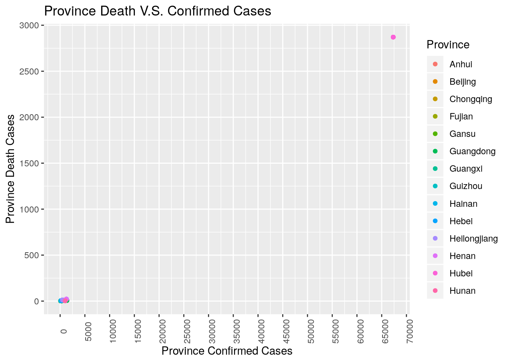
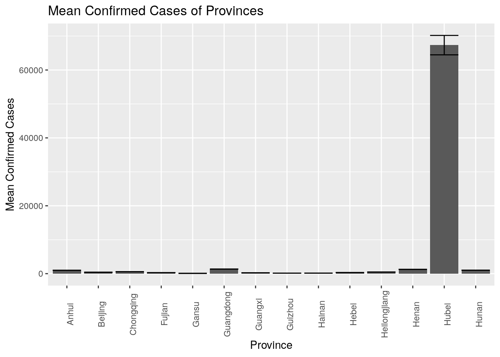
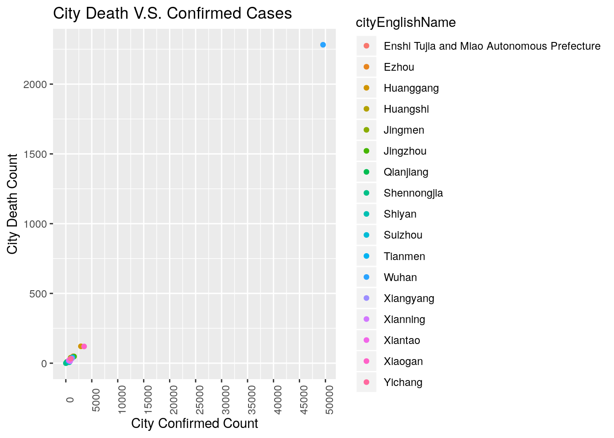
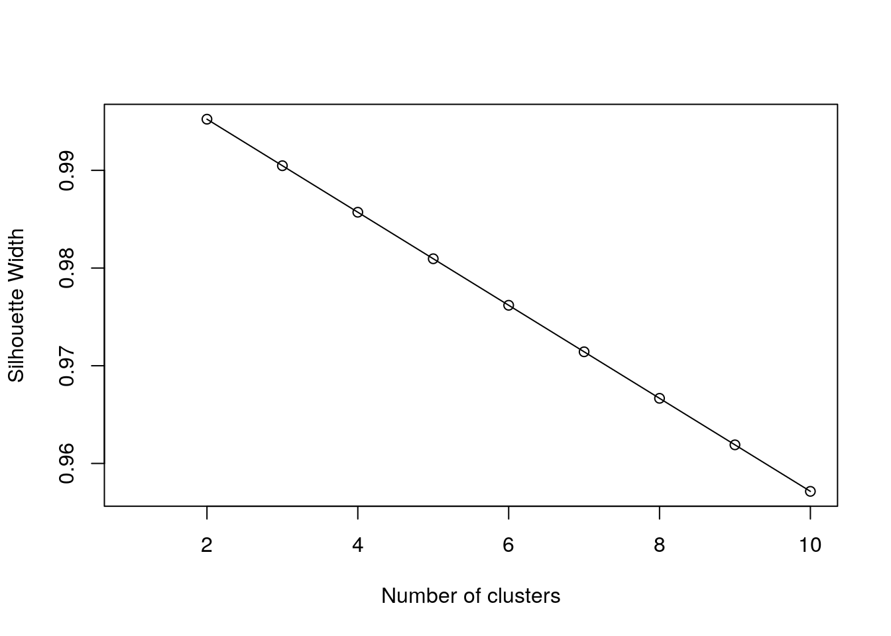
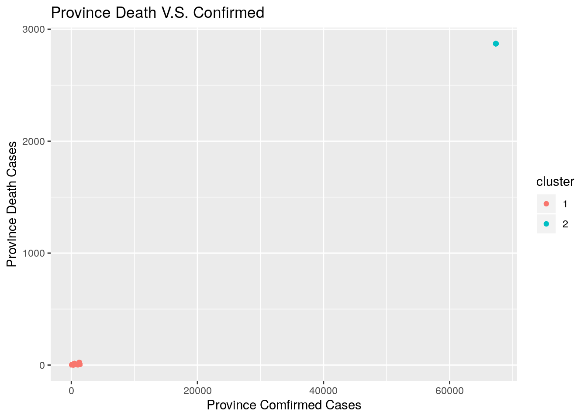
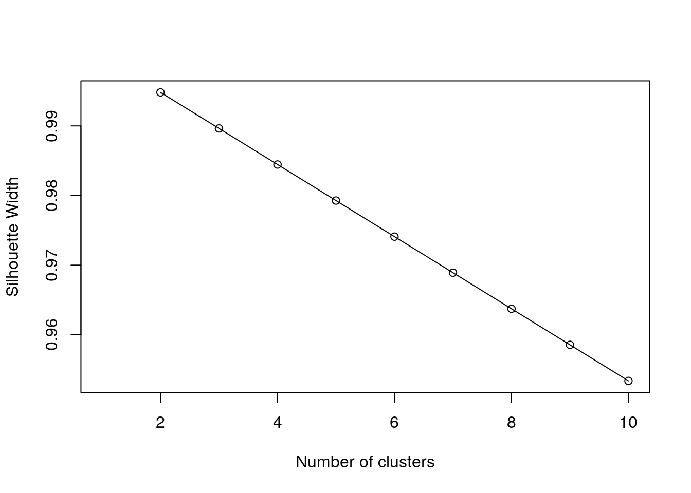
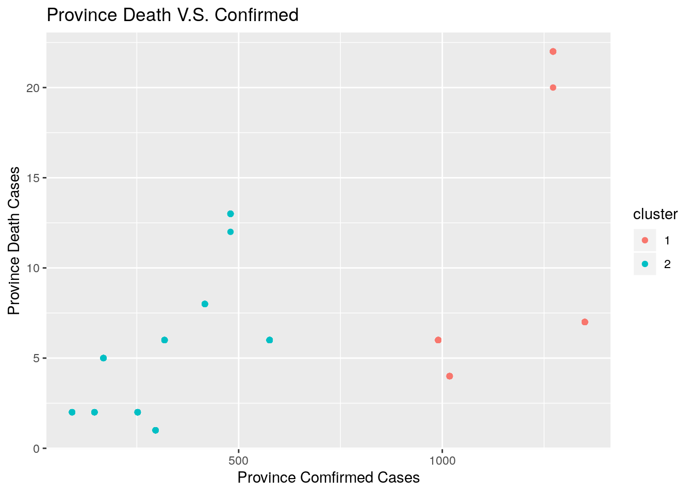

knitr::opts_chunk$set(echo = TRUE, eval = TRUE, fig.align = "center", warning = F, message = F,
tidy=TRUE, tidy.opts=list(width.cutoff=60), R.options=list(max.print=100))Name: Ruiqian Xu EID:rx737
This is an R Markdown document. Markdown is a simple formatting syntax for authoring HTML, PDF, and MS Word documents. For more details on using R Markdown see http://rmarkdown.rstudio.com.
When you click the Knit button a document will be generated that includes both content as well as the output of any embedded R code chunks within the document. You can embed an R code chunk like this:
I have chosen two datasets: “Provinces” and “City”. The “Provinces” dataset contains some provinces in China that have been influenced by the Corona virus, the cities in those provinces, the confirmed cases in those provinces till 3/1/2020 and the death cases in those province till 3/1/2020. The “City” dataset contains some cities in China that have been influenced by the Corona virus, the confirmed cases in those cities till 3/1/2020 and the death cases in those cities till 3/1/ 2020. I acquired the datasets from kaggle.com. These datasets interest me because they are about Corona virus. As is well known, the Corona virus is a serious problem to the whole world, so I would like to figure out how my homeland– China was influenced. Potential expectations might be infection based on proximity to Hubei, the original source of the pandemic. In fact, if I hadn’t already known about Hubei, this analysis might reveal Hubei as the source.
Provinces <- read.csv("Provinces.csv")
City <- read.csv("City.csv")
library(tidyr)
library(dplyr)
tidy_confirm <- Provinces %>% group_by(provinceEnglishName) %>%
mutate(row = row_number()) %>% tidyr::pivot_wider(names_from = "provinceEnglishName",
values_from = "province_confirmedCount") %>% select(-row)
origin <- tidy_confirm %>% pivot_longer(-c(1:2), names_to = "Province",
values_to = "Confirmed") %>% na.omit()For the “Provinces” dataset, I used pivot_wider function to make each observation in the “provinceEnglishName” column a single variable. Then, I used pivot_longer function to intergrate those new varables into one column again.
merged <- origin %>% full_join(City, by = "cityEnglishName")I chose “full join” as my joining method because I do not want to miss any data from either dataset. In this case, nothing got dropped.
merged %>% filter(Province == "Hubei")## # A tibble: 17 x 6
## cityEnglishName province_deadCo… Province Confirmed city_confirmedC…
## <fct> <int> <chr> <int> <int>
## 1 Enshi Tujia an… 2871 Hubei 67332 252
## 2 Ezhou 2871 Hubei 67332 1392
## 3 Huanggang 2871 Hubei 67332 2907
## 4 Huangshi 2871 Hubei 67332 1014
## 5 Jingmen 2871 Hubei 67332 928
## 6 Jingzhou 2871 Hubei 67332 1580
## 7 Qianjiang 2871 Hubei 67332 198
## 8 Shennongjia 2871 Hubei 67332 11
## 9 Shiyan 2871 Hubei 67332 672
## 10 Suizhou 2871 Hubei 67332 1307
## 11 Tianmen 2871 Hubei 67332 496
## 12 Wuhan 2871 Hubei 67332 49540
## 13 Xiangyang 2871 Hubei 67332 1175
## 14 Xianning 2871 Hubei 67332 836
## 15 Xiantao 2871 Hubei 67332 575
## 16 Xiaogan 2871 Hubei 67332 3518
## 17 Yichang 2871 Hubei 67332 931
## # … with 1 more variable: city_deadCount <int>merged %>% arrange(desc(Confirmed))## # A tibble: 210 x 6
## cityEnglishName province_deadCo… Province Confirmed city_confirmedC…
## <fct> <int> <chr> <int> <int>
## 1 Enshi Tujia an… 2871 Hubei 67332 252
## 2 Ezhou 2871 Hubei 67332 1392
## 3 Huanggang 2871 Hubei 67332 2907
## 4 Huangshi 2871 Hubei 67332 1014
## 5 Jingmen 2871 Hubei 67332 928
## 6 Jingzhou 2871 Hubei 67332 1580
## 7 Qianjiang 2871 Hubei 67332 198
## 8 Shennongjia 2871 Hubei 67332 11
## 9 Shiyan 2871 Hubei 67332 672
## 10 Suizhou 2871 Hubei 67332 1307
## # … with 200 more rows, and 1 more variable: city_deadCount <int>merged %>% select(-c(1:4))## # A tibble: 210 x 2
## city_confirmedCount city_deadCount
## <int> <int>
## 1 83 0
## 2 160 5
## 3 108 0
## 4 17 0
## 5 13 0
## 6 155 0
## 7 174 1
## 8 27 0
## 9 27 0
## 10 9 0
## # … with 200 more rowsmerged %>% mutate(city_sick = city_confirmedCount - city_deadCount)## # A tibble: 210 x 7
## cityEnglishName province_deadCo… Province Confirmed city_confirmedC…
## <fct> <int> <chr> <int> <int>
## 1 Anqing 6 Anhui 990 83
## 2 Bengbu 6 Anhui 990 160
## 3 Bozhou 6 Anhui 990 108
## 4 Chizhou 6 Anhui 990 17
## 5 Chuzhou 6 Anhui 990 13
## 6 Fuyang 6 Anhui 990 155
## 7 Hefei 6 Anhui 990 174
## 8 Huaibei 6 Anhui 990 27
## 9 Huainan 6 Anhui 990 27
## 10 Huangshan 6 Anhui 990 9
## # … with 200 more rows, and 2 more variables: city_deadCount <int>,
## # city_sick <int>merged %>% group_by(Province)## # A tibble: 210 x 6
## # Groups: Province [14]
## cityEnglishName province_deadCo… Province Confirmed city_confirmedC…
## <fct> <int> <chr> <int> <int>
## 1 Anqing 6 Anhui 990 83
## 2 Bengbu 6 Anhui 990 160
## 3 Bozhou 6 Anhui 990 108
## 4 Chizhou 6 Anhui 990 17
## 5 Chuzhou 6 Anhui 990 13
## 6 Fuyang 6 Anhui 990 155
## 7 Hefei 6 Anhui 990 174
## 8 Huaibei 6 Anhui 990 27
## 9 Huainan 6 Anhui 990 27
## 10 Huangshan 6 Anhui 990 9
## # … with 200 more rows, and 1 more variable: city_deadCount <int>merged %>% summarize_if(is.numeric, max, na.rm = T)## # A tibble: 1 x 4
## province_deadCount Confirmed city_confirmedCount city_deadCount
## <int> <int> <int> <int>
## 1 2871 67332 49540 2282In line #58-63, I used the six core dplyr functions seperately. #58, I filtered all the observations are from Hubei province. #59, I arranged the “Confirmed” variable descendently, from the lowest number of confirmed cases to the highest. #60, I selected all columns except column 1 to 4. #61, I created a new column called city_sick which is a difference between city confirmed counts and city death counts. #62, I grouped the dataset by province. #63, I summarized the max values of all numeric variables in the dataset “merged”.
(2)Ten different summary functions
merged %>% group_by(Province) %>% summarize(mean_province_sick = mean(Confirmed -
province_deadCount))## # A tibble: 14 x 2
## Province mean_province_sick
## <chr> <dbl>
## 1 Anhui 984
## 2 Beijing 409
## 3 Chongqing 570
## 4 Fujian 295
## 5 Gansu 89
## 6 Guangdong 1343
## 7 Guangxi 250
## 8 Guizhou 144
## 9 Hainan 163
## 10 Hebei 312
## 11 Heilongjiang 467.
## 12 Henan 1250.
## 13 Hubei 64461
## 14 Hunan 1014merged %>% group_by(cityEnglishName) %>% summarize(mean_city_sick = mean(city_confirmedCount -
city_deadCount, na.rm = T))## # A tibble: 210 x 2
## cityEnglishName mean_city_sick
## <fct> <dbl>
## 1 "" 1
## 2 Anqing 83
## 3 Anshun 4
## 4 Anyang 53
## 5 Baise 3
## 6 Baiyin 4
## 7 Banan District 6
## 8 Baoding 32
## 9 Baoting Li and Miao Autonomous County 3
## 10 Beihai 43
## # … with 200 more rowsmerged %>% group_by(Province) %>% summarize(province_confirmed_total = sum(city_confirmedCount,
na.rm = T))## # A tibble: 14 x 2
## Province province_confirmed_total
## <chr> <int>
## 1 Anhui 990
## 2 Beijing 284
## 3 Chongqing 573
## 4 Fujian 296
## 5 Gansu 88
## 6 Guangdong 1350
## 7 Guangxi 252
## 8 Guizhou 146
## 9 Hainan 168
## 10 Hebei 311
## 11 Heilongjiang 480
## 12 Henan 1272
## 13 Hubei 67332
## 14 Hunan 916merged %>% group_by(Province) %>% summarize(province_death_total = sum(city_deadCount,
na.rm = T))## # A tibble: 14 x 2
## Province province_death_total
## <chr> <int>
## 1 Anhui 6
## 2 Beijing 0
## 3 Chongqing 6
## 4 Fujian 1
## 5 Gansu 2
## 6 Guangdong 7
## 7 Guangxi 2
## 8 Guizhou 2
## 9 Hainan 5
## 10 Hebei 6
## 11 Heilongjiang 13
## 12 Henan 22
## 13 Hubei 2871
## 14 Hunan 3merged %>% group_by(cityEnglishName) %>% summarize(Other_City_Death = province_deadCount -
city_deadCount)## # A tibble: 210 x 2
## cityEnglishName Other_City_Death
## <fct> <int>
## 1 "" 6
## 2 Anqing 6
## 3 Anshun 2
## 4 Anyang 22
## 5 Baise 2
## 6 Baiyin 2
## 7 Banan District 6
## 8 Baoding 6
## 9 Baoting Li and Miao Autonomous County 5
## 10 Beihai 1
## # … with 200 more rowsmerged %>% group_by(cityEnglishName) %>% summarize(Other_City_confirmed = Confirmed -
city_confirmedCount)## # A tibble: 210 x 2
## cityEnglishName Other_City_confirmed
## <fct> <int>
## 1 "" 575
## 2 Anqing 907
## 3 Anshun 142
## 4 Anyang 1219
## 5 Baise 249
## 6 Baiyin 87
## 7 Banan District 570
## 8 Baoding 286
## 9 Baoting Li and Miao Autonomous County 165
## 10 Beihai 208
## # … with 200 more rowsmerged %>% summarize(n_rows = n(), n_province = n_distinct(Province))## # A tibble: 1 x 2
## n_rows n_province
## <int> <int>
## 1 210 14merged %>% summarize(n_rows = n(), n_city = n_distinct(cityEnglishName))## # A tibble: 1 x 2
## n_rows n_city
## <int> <int>
## 1 210 210merged %>% summarize_if(is.numeric, min, na.rm = T)## # A tibble: 1 x 4
## province_deadCount Confirmed city_confirmedCount city_deadCount
## <int> <int> <int> <int>
## 1 1 91 1 0merged %>% summarize_if(is.numeric, mean, na.rm = T)## # A tibble: 1 x 4
## province_deadCount Confirmed city_confirmedCount city_deadCount
## <dbl> <dbl> <dbl> <dbl>
## 1 239. 6047. 355. 14.0merged %>% summarize_if(is.numeric, sd, na.rm = T)## # A tibble: 1 x 4
## province_deadCount Confirmed city_confirmedCount city_deadCount
## <dbl> <dbl> <dbl> <dbl>
## 1 783. 18237. 3432. 158.In line 69-79, I made 11 summary functions, line 69-74 are with group_by function as well. #69, I grouped the dataset by province and summarized the difference between province confirmed counts and province death counts. #70, I grouped the dataset by city name and I summarized the difference between city confirmed counts and city death counts. #71, I grouped the dataset by province and summarized the sum of city confirmed counts. #72, I grouped the dataset by province and summarized the sum of city death counts. #73, I grouped the dataset by city name and summarized the difference between province death counts and city death counts. #74, I grouped the dataset by city name and summarized the difference between province confirmed and city confirmed. #75, I summarized the number of rows in this dataset and number of different provinces. #76, I summarized the number of rows in this dataset and number of different cities. #77, I summarized the min values of all numeric variables in this dataset. #78, I summarized the mean values of all numeric variables in this dataset. #79, I summarized the standard deviation of all numeric variables in this dataset.
library(ggplot2)
merged %>% ggplot(aes(Confirmed, province_deadCount, color = Province)) +
geom_point() + scale_x_continuous(breaks = seq(0, 70000,
5000)) + scale_y_continuous(breaks = seq(0, 3000, 500)) +
theme(axis.text.x = element_text(angle = 90)) + xlab("Province Confirmed Cases") +
ylab("Province Death Cases") + ggtitle("Province Death V.S. Confirmed Cases")
merged %>% group_by(Province) %>% summarize(mean_confirmed = mean(Confirmed,
na.rm = T), sd_confirmed = sd(city_confirmedCount, na.rm = T),
count_confirmed = n(), se_confirmed = (sd_confirmed/sqrt(n()))) %>%
ggplot(aes(x = Province, y = mean_confirmed)) + geom_bar(stat = "summary",
fun.y = "mean") + geom_errorbar(aes(x = Province, y = mean_confirmed,
ymin = mean_confirmed - se_confirmed, ymax = mean_confirmed +
se_confirmed)) + theme(axis.text.x = element_text(angle = 90)) +
ggtitle("Mean Confirmed Cases of Provinces") + ylab("Mean Confirmed Cases") +
xlab("Province")
merged %>% filter(Province == "Hubei") %>% ggplot(aes(city_confirmedCount,
city_deadCount, color = cityEnglishName)) + geom_point() +
scale_x_continuous(breaks = seq(0, 70000, 5000)) + scale_y_continuous(breaks = seq(0,
3000, 500)) + theme(axis.text.x = element_text(angle = 90)) +
ggtitle("City Death V.S. Confirmed Cases") + ylab("City Death Count") +
xlab("City Confirmed Count") The first ggplot presents a relationship between province death and province confirmed counts. From the plot, Hubei province shows a much higher frequency of both death and confirmed cases. Since the number of cases is so high in Hubei, the dots presents other provinces are clusted together, we cannot really tell the relations hip between province confirmed cases and province death cases. The second barplot presents the average confirmed cases of each province. From the plot, Hubei provine has the highest mean confirmed cases. The third ggplot presents a relationship between city death and city confirmed counts in Hubei province. From the plot, Wuhan city has the highest frequency of both death and confirmed cases. Even the number of counts is much higher in Wuhan than in other cities in Hubei province, we could still see a positive linear relationship between city confirmed counts and city death counts in Hubei province.
library(cluster)
merged1 <- na.omit(merged)
merged2 <- scale(merged1$Confirmed)
sil_width <- c(NA)
for (i in 2:10) {
pam_fit <- pam(merged2, diss = TRUE, k = i)
sil_width[i] <- pam_fit$silinfo$avg.width
}
plot(1:10, sil_width, xlab = "Number of clusters", ylab = "Silhouette Width")
lines(1:10, sil_width)
pam2 <- merged1 %>% select(-c(1, 3)) %>% pam(2)
final <- merged1 %>% mutate(cluster = as.factor(pam2$clustering))
confmat <- final %>% group_by(Province) %>% count(cluster) %>%
arrange(desc(n)) %>% pivot_wider(names_from = "cluster",
values_from = "n", values_fill = list(n = 0))
confmat## # A tibble: 14 x 3
## # Groups: Province [14]
## Province `1` `2`
## <chr> <int> <int>
## 1 Chongqing 39 0
## 2 Guangdong 20 0
## 3 Henan 18 0
## 4 Hubei 0 17
## 5 Anhui 16 0
## 6 Hainan 15 0
## 7 Guangxi 13 0
## 8 Heilongjiang 13 0
## 9 Hunan 13 0
## 10 Hebei 10 0
## 11 Beijing 9 0
## 12 Fujian 9 0
## 13 Gansu 9 0
## 14 Guizhou 9 0round(sum(diag(as.matrix(confmat[, -c(1, 3)])))/sum(confmat[,
-c(1, 3)]), 4)## [1] 0.2021ggplot(final, aes(x = Confirmed, y = province_deadCount, color = cluster)) +
geom_point() + ggtitle("Province Death V.S. Confirmed") +
ylab("Province Death Cases") + xlab("Province Comfirmed Cases") I used cluster with PMA to analyze the data. According to the sil_width function, I got number of clusters equals to 2. Culster 1 stands for the provinces other than Hubei, while cluster 2 basicly stands for Hubei province. But the ggplot shows the two cluster groups are really far apart. I got the Average Silhouette Width as 0.1979, which is really low and shows no substantial structure has been found between the two clusters. I think the reason why I got this result is the Hubei province has a much higher number of both death and confirmed cases than in other provinces. That makes the scale of the plot really big, thus we cannot see the exact distribution of other provinces. To get a better sence of the distribution of other provinces, I am going to take Hubei province out and make a new plot of other provinces.
library(cluster)
no_Hubei <- merged[merged$Province != "Hubei", ]
no_Hubei1 <- na.omit(no_Hubei)
no_Hubei2 <- scale(no_Hubei1$Confirmed)
sil_width <- c(NA)
for (i in 2:10) {
pam_fit1 <- pam(no_Hubei2, diss = TRUE, k = i)
sil_width[i] <- pam_fit1$silinfo$avg.width
}
plot(1:10, sil_width, xlab = "Number of clusters", ylab = "Silhouette Width")
lines(1:10, sil_width)
pam3 <- no_Hubei1 %>% select(-c(1, 3)) %>% pam(2)
final1 <- no_Hubei1 %>% mutate(cluster = as.factor(pam3$clustering))
confmat1 <- final1 %>% group_by(Province) %>% count(cluster) %>%
arrange(desc(n)) %>% pivot_wider(names_from = "cluster",
values_from = "n", values_fill = list(n = 0))
confmat1## # A tibble: 13 x 3
## # Groups: Province [13]
## Province `2` `1`
## <chr> <int> <int>
## 1 Chongqing 39 0
## 2 Guangdong 0 20
## 3 Henan 0 18
## 4 Anhui 0 16
## 5 Hainan 15 0
## 6 Guangxi 13 0
## 7 Heilongjiang 13 0
## 8 Hunan 0 13
## 9 Hebei 10 0
## 10 Beijing 9 0
## 11 Fujian 9 0
## 12 Gansu 9 0
## 13 Guizhou 9 0round(sum(diag(as.matrix(confmat[, -c(1, 3)])))/sum(confmat[,
-c(1, 3)]), 4)## [1] 0.2021ggplot(final1, aes(x = Confirmed, y = province_deadCount, color = cluster)) +
geom_point() + ggtitle("Province Death V.S. Confirmed") +
ylab("Province Death Cases") + xlab("Province Comfirmed Cases") I used cluster with PMA to analyze the data again. According to the sil_width function, I got number of clusters equals to 2. Culster 1 stands for Guangdong, Hunan, Anhui, Henan provinces, while cluster 2 stands for the provinces other than Gunagdong, Hunan, Anhui, Henan and Hubei provinces. But the ggplot shows cluster2 group is not as clusted as cluster1 group. I got the Average Silhouette Width as 0.1979 again, which is really low and shows no substantial structure has been found between the two clusters. I think the reason why I got this result is there is no obvious linear relationship between province confirmed cases and province death cases, instead of the interuption of Hubei province.